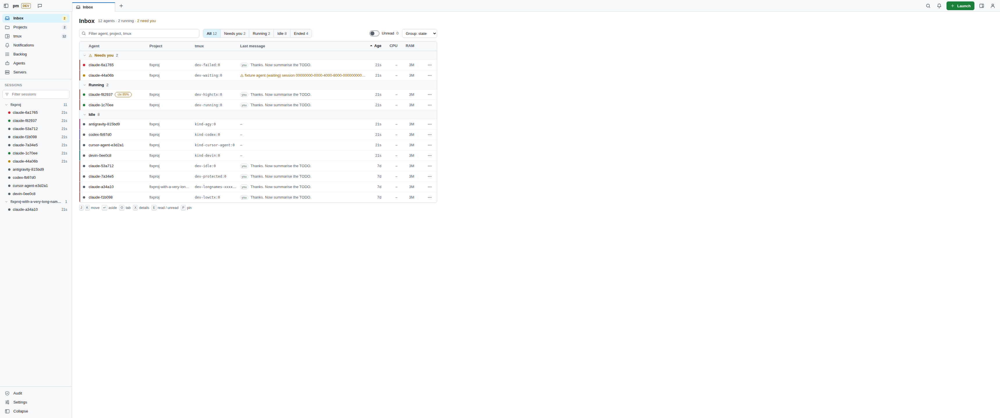
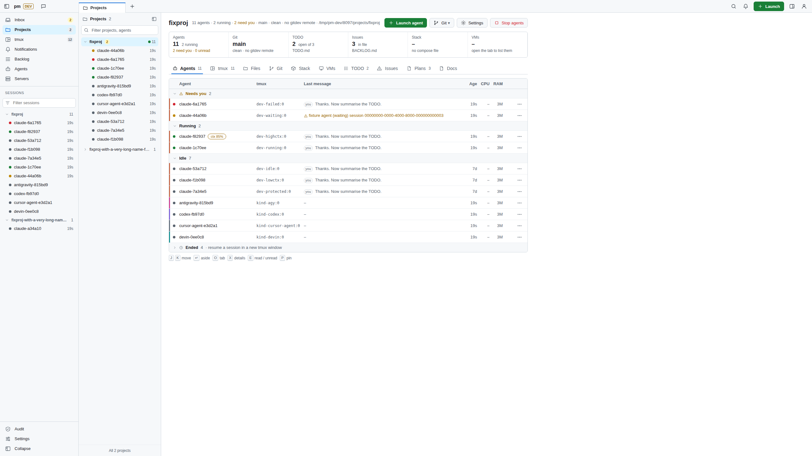
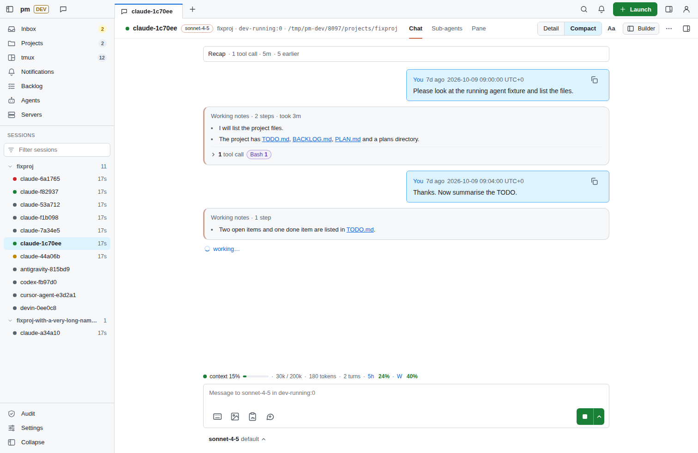

polymux
One control plane for your coding agents, tmux sessions and servers.
A self-hosted web app for one Linux host. Your projects and their git state, your tmux sessions and the agents running in them, your containers and VMs. Launch agents, read and answer their chats, stop them, from any screen.
Command pm. Single user, MIT licensed. Python 3.13, FastAPI and HTMX, no JavaScript build step.


Thirty tmux sessions, and which one is waiting for me?
I'm a technical guy, not a developer. I built polymux as my own place to experiment with coding agents, and I want to use every coding agent out there, not only Claude Code or Codex.
I work in the terminal and keep many sessions open at once, usually 10 to 50 tmux sessions. With that many it gets very hard to keep track: which agent is waiting for me, what each one answered, and where the docs they wrote ended up.
$ tmux ls api: 4 windows (attached) billing: 2 windows blog: 1 windows docs-site: 3 windows edge-bgp: 2 windows infra: 6 windows (attached) lab-ospf: 5 windows mail: 1 windows vm-builds: 2 windows # ...and 21 more
Waiting for you 2
- Claude Codeapi
- Codexbilling
Running 3
- Devindocs-site
- Cursor Agentinfra
- Claude Codevm-builds
Idle 2
- Antigravityblog
- Codexlab-ospf
Type in tmux or in the browser. It is the same session.
polymux stays in sync with tmux. Every agent and shell is a real tmux pane, so you can type in tmux or in the web UI, from the laptop or the phone, and it doesn't matter: both show the same session.
> run the tests and fix what fails uv run pytest -q 2 failed, 148 passed Fixed both in tests/test_api.py. > commit it
run the tests and fix what fails
Ran uv run pytest -q: 2 failed, 148 passed. Fixed both in tests/test_api.py.
commit it
Any agent, not one vendor
polymux runs the coding agent CLIs you already have, each in its own tmux window, side by side.
- Claude Code
- Codex
- Devin
- Cursor Agent
- Antigravity
- add yours
Launch
Start any of them in a new tmux window with model, effort, permission mode and an optional git worktree.
Follow up
Fork, continue, review, or stop them all. Ended agents keep a permanent page.
Library
See the skills, rules, scripts and MCP servers installed for each agent.
Everywhere you are
I switch screens all day. I needed one place I can open from any of them and still see everything I'm working on.




Where it runs
polymux and your agents run on a Linux VPS or dedicated server. Every device is just a browser pointed at it.
That's on purpose: I don't want coding agents running on my laptop or phone. Your devices never run agents, and you can still reach everything from anywhere.
Want it on your own machine instead? That works too: install it on any Linux box.
Self-hosted, in one place
I want it self-hosted as much as possible. I'd rather not build on a provider's website, and I don't want to copy things back and forth between tools and machines. Everything should live in one place that I choose, and be there when I need it.
Fast, not bloated
I want it fast and not bloated. The core stays small on purpose. If you want another feature, build it as a plugin (pages, nav items, settings, themes, links), so people who want it can install it and everyone else keeps a lean polymux.
Not only code
Much of what runs in my tmux sessions is servers, infrastructure and networking work. polymux keeps it in the same view as the agents: shells, projects, git, containers and VMs.
- Host
- Resources and processes of the machine pm runs on.
- Containers
- Docker containers with stop, restart and kill. Names that match your protected globs are never touched.
- Stacks
- Each project's compose stack, on its project page.
- VMs
- libvirt guests, per host and per project.
- Other hosts
- Whether the machines you care about are reachable.
- Health alerts
- Host health alerts go to ntfy, next to agent state changes.
Optional parts hide themselves when their tool is missing: no Docker, no Stacks; no libvirt, no VMs; no ntfy URL, no ntfy.
What you get
Inbox
All running agents grouped Waiting for you, Running and Idle, with last message, unread badges, recap, exit and resume.
Chat
A live chat view of each agent. Composer with queued messages, file attach and snippets; quick one-off
claude -pchats.Projects & git
Every folder under
dev_rootis a project. Git badges for dirty, ahead and behind; fetch, pull, push and history.tmux
Sessions, windows and panes. New session, kill with guards, optional read-only browser terminal.
Servers / VMs
Host resources, processes, Docker containers, libvirt VMs and the reachability of other hosts.
Notifications
Agent state changes and host alerts to ntfy; ntfy topics mirrored into the Inbox.
Builder preview
Agent chat on the left, a sandboxed live preview of the project's static files on the right.
Tracker
Issues, TODO, CHANGELOG and FEATURES live in SQLite and render to Markdown. Agents use the
pmctlCLI.
A closer look at dt
Fixture data. Select a screenshot to enlarge it; more on the screenshots page.

Inbox Agents grouped by who needs you. 
Agent chat Read and answer one agent. 
Project Agents, sessions, git and files of one folder. 
tmux Sessions, windows and panes. 
iPhone Inbox 
iPhone chat
Two themes, one app
Pick one per browser in Settings or with ?ui=dt on any URL. Set the server default with theme = "dt" in pm.toml.


classic the default
A sidebar layout with a phone tab bar.
dt newer, keyboard first
A keyboard-driven shell: tabs, a sessions sidebar, command menus and layered panels. This site borrows its colours.
dt speaks vim and macOS
Vim-style keys for lists and pages, macOS-style search and switching. Use Ctrl instead of ⌘ on Linux and Windows.
- JK
- Move through a list
- ⌘Kor⌘⇧P
- Search everything
- GthenIPT
- Go to Inbox, Projects, tmux
- >
- Typed in search: commands only
- /
- Filter the list
- ⌘P
- Go to a session
- ?
- Show all keys
- ⌘B
- Toggle the sidebar
- Esc
- Close the top layer
- ⌘,
- Open settings
Security model
pm can send text to coding agents, kill tmux windows, stop containers and change VMs. Treat access to it like a shell on the host.
One user, one host
- Runs as your user on one Linux host, never as root.
- Binds to loopback. Other machines reach it only through a TLS reverse proxy.
- Log in with a token (created with mode 0600 on first start) or a passkey. Failed logins back off.
- Optional TOTP; with
require_unlockon, every change needs a TOTP or passkey unlock first. - Session cookie is
Secure,HttpOnly,SameSite=Strict; sessions can be listed and revoked.
Protected by default
- Every tmux session is protected unless its name matches a glob you allow.
pm*sessions always are. - Containers and VMs that match your protected globs are never changed.
- Pane text is stripped and masked for secrets, and never logged, indexed or sent to ntfy.
Every change passes one guard
- Logged-in session, else 401.
- Origin check against your allowed origins, else 403.
- Per-session CSRF token, else 403.
- Unlocked session, when
require_unlockis on. - Tier check against the tier ceiling.
- Audit line written and synced to disk. If that fails, the request is refused.
Tiers
| Tier | Allows |
|---|---|
| 0 | View: read pages |
| 1 | Safe: edit backlog and TODO, git remotes, project settings |
| 2 | Message: send text to agents, fork, exit, quick chat, terminal ticket (the default ceiling) |
| 3 | Terminal: reserved, not enabled |
Found a security problem? Please report it privately with GitHub private vulnerability reporting, not in a public issue. Full model: SECURITY.md.
Quick start
Linux, Python 3.13 or newer through uv, tmux and git. Docker, libvirt, ntfy and the agent CLIs are optional.
$ git clone https://github.com/dungtq/polymux.git $ cd polymux $ uv sync $ uv run pm
- Open
http://127.0.0.1:8093. On first start pm writes a login token to~/.config/pm/token(mode 0600). Paste it into the login form. - Plain
http://works only on127.0.0.1andlocalhost, because the session cookie isSecure. Anywhere else, put pm behind a TLS reverse proxy: docs/INSTALL.md. - The git panel fetches, pulls and pushes the remote named
gitdev. Add yours under that name in each project. - Every
pm.tomlkey and its default: docs/CONFIG.md.
early, about 10 days old
Status and contributing
I have been building polymux for only about 10 days, so it still has bugs. It is a working tool I use every day, but it moves fast: pages change and some parts are unfinished.
Both themes have bugs. classic works but has open UI issues, from a low-contrast label to rows that stretch too wide on big screens and a few iPhone wrapping glitches. dt is newer and still being built: some pages are not ported yet and show their classic version inside the dt shell.
The cool part: polymux is where I work on all my other projects, so I keep fixing polymux along the way. Every rough edge I hit while doing something else turns into the next fix.
Contributions are very welcome: bug reports, ideas, fixes, support for more coding agents, new themes.